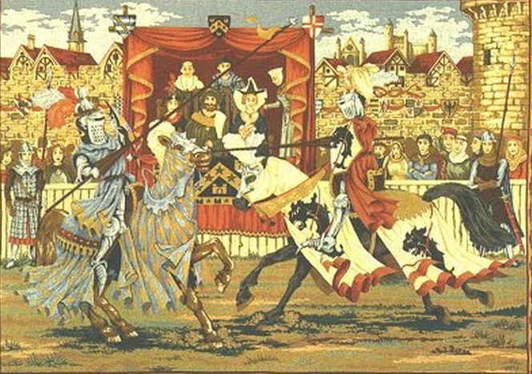
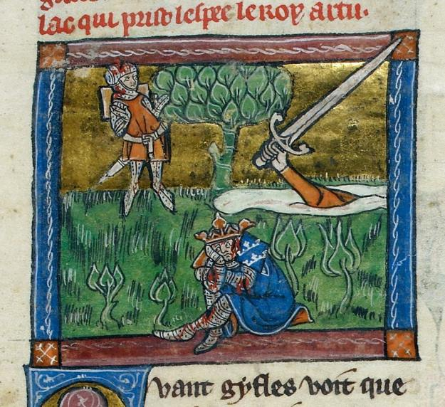
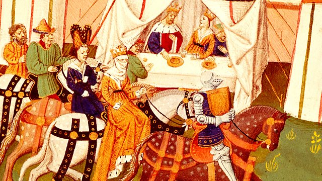

-

- 
- 
- 
Here you can find all the details about my ongoing PhD project and research, including the methodology and its theoretical background, collaborations, publications, artworks, lists of references and bibliography.
The aim of the project is to create a game adaptation of Sir Thomas Malory’s Arthurian legends, by placing the late Medieval narrative into the new, digital media. To present the original content as faithfully as possible, while remediating it into a new form. The interactivity of games enables the creation of a (partly) new narrative, which also makes it possible to engage players in a detailed, open world. Not only can they discover on their own how the story unfolds, but also get to the heart of it and its heroes and foes.
The advance of technology offers new platforms for literature and for storytelling. With digital media, there is an added layer for conveying narratives, enhancing stories and creating a unique and immersive experience for the audience. A few impressive examples include: electronic literature, the Holodeck, Virtual and Augmented Reality, transmedia storytelling, Frankenstein AI. Digital games may seem to be an uncommon medium for such a project, however, we can observe them as complex cultural objects, which combine different forms of art in a highly innovative way, giving new and exciting forms to literary traditions.
For the prototype of the game I am using Unity and Neverwinter Nights Diamond Edition, and my work will be assisted by professionals, so that the adaptation should depict Malory's world as accurately as possible. The narrative should meet the requirements of its new medium without significant alteration made to the original story, therefore, the adaptation will be done following the guidelines of dramaturgs. The artwork depicting the characters will reanimate illustrations of British manuscripts. Castles, chapels, the graveyard, tournaments, hermitages will be based on the resources of architectural historians. Before the digital creation of the game itself, all the major buildings, the natural environment, the monsters, the people, their equipment, weapons, armour and clothes will be modelled with the assistance of the crew at FabLab.
An interesting parallel with Malory is to be expected in terms of anachronism. Despite our best efforts, the project will not only tell a tale about late Medieval England, but also about our age and culture as well. The stories that we focus on, the traits, the virtues, all the details, even those parts that we disregard will be unique to us, as we retell the legends from our point of view. Nevertheless, that comes as no surprise, since every age emphasizes different aspect of Arthur's story, as the legends continue to fascinate us.